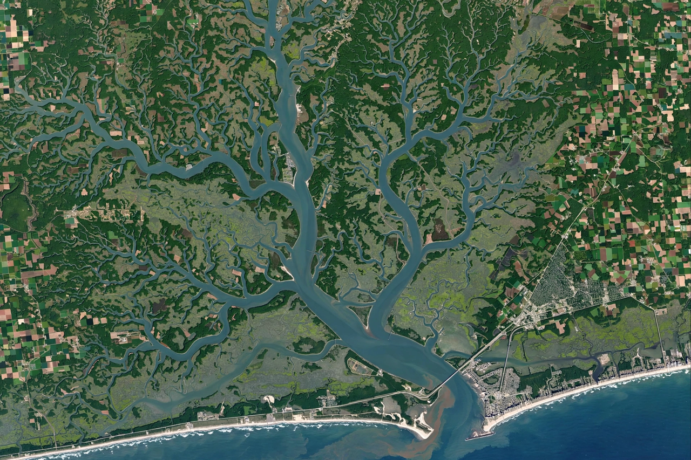

| Chesapeake Bay | |
|---|---|
 | |
| Location | Maryland and Virginia, United States |
| Type | Estuary (drowned river valley) |
| Length | About 200 miles (320 km) |
| Width | 3 to 30 miles (4.8 to 48 km) |
| Surface area | 4,479 sq mi (11,601 km²) |
| Average depth | 21 ft (6.4 m) |
| Primary inflows | Susquehanna River, Potomac River, James River, York River, Rappahannock River |
| Watershed | 64,299 sq mi (166,534 km²), spanning six states and Washington, D.C. |
The Chesapeake Bay is the largest estuary in the United States, lying inland from the Atlantic Ocean and surrounded by the states of Maryland and Virginia. The bay is approximately 200 miles (320 km) long from its northern head of tide in the Susquehanna River to its outlet in the Atlantic near Norfolk and Virginia Beach. It is the drowned river valley (ria) of the Susquehanna, formed as sea level rose after the last Ice Age. The bay's watershed covers 64,299 square miles (166,534 km²) in New York, Pennsylvania, West Virginia, Maryland, Delaware, Virginia, and the District of Columbia, home to more than 18 million people.
The bay is shallow, averaging only about 21 feet (6.4 m) deep, with a deeper natural channel — the former bed of the Susquehanna — running its length. Some 150 major rivers and streams flow into it; the Susquehanna alone supplies about half of the bay's freshwater. Because fresh and salt water mix only partially, the bay shows a north–south salinity gradient, from nearly fresh at the head to fully marine at its mouth. Two great crossings span it: the Chesapeake Bay Bridge (Annapolis to Kent Island) in Maryland and the Chesapeake Bay Bridge–Tunnel in Virginia.
The bay occupies the site of an impact crater formed about 35 million years ago in the late Eocene, when a bolide struck the Atlantic continental shelf, creating the Chesapeake Bay impact crater beneath the bay's mouth — a structure that still influences local groundwater and subsidence. Sea-level rise at the end of the Pleistocene then flooded the Susquehanna's valley to create the modern estuary around 10,000 years ago.
The bay is famous for its seafood, especially the blue crab (Callinectes sapidus), the eastern oyster, and the striped bass (rockfish). Its marshes, underwater grass beds, and shorelines support thousands of plant and animal species, including migratory waterfowl of the Atlantic Flyway. Oyster reefs once filtered the bay's entire volume in days, but overharvesting, disease (MSX and Dermo), and habitat loss reduced populations to a small fraction of historic levels. Nutrient pollution from agriculture and wastewater has caused algal blooms and oxygen-depleted "dead zones," prompting a multi-state restoration effort coordinated by the Chesapeake Bay Program since 1983; a 2010 federal "pollution diet" (total maximum daily load) set binding reduction targets for nitrogen, phosphorus, and sediment.
Indigenous peoples lived around the bay for thousands of years; "Chesapeake" derives from an Algonquian word, Chesepiooc, often rendered "great shellfish bay." Captain John Smith explored and mapped the bay in 1608 after the founding of Jamestown. The bay was a theatre of the Revolutionary War — its waters saw the decisive naval Battle of the Chesapeake in 1781, which sealed the British defeat at Yorktown — and of the War of 1812 and the American Civil War. Its ports, notably Baltimore and Norfolk, grew into major commercial and naval centres, and the bay's working sail fleet of skipjacks and bugeyes became an enduring regional symbol.
This article is a recreation from memory in the style of Wikipedia.